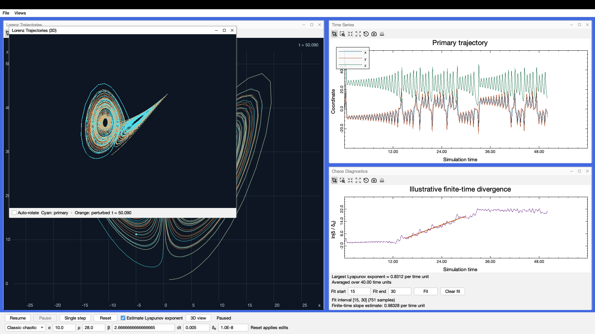

MDI Chaos Lab
Explore how two Lorenz trajectories that start almost at the same point diverge over time. Follow both trajectories in a 2D projection or open the rotating 3D view.
View mdi-chaos on GitHub · v1.0.0 release
Download the v1.0.0 runnable ZIP
Extract the ZIP, open a terminal in the extracted folder, and run
java -jar mdi-chaos.jar. Use Java 17 or newer and keep the bundled
lib folder next to the JAR. No Maven build is required.
Gallery


Build from source
git clone https://github.com/heddle/mdi-chaos.git
cd mdi-chaos
mvn clean verify
mvn exec:javaThe app requires Java 17 or newer and uses MDI 1.2.4. The optional 3D view uses MDI-3D 1.0.3 and requires OpenGL.